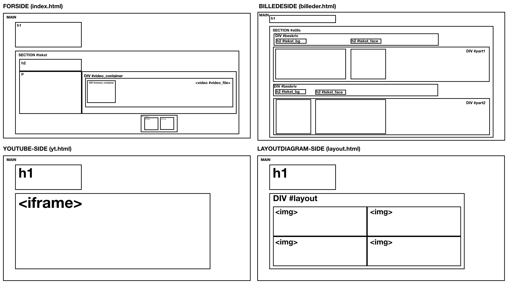

PILOTSITE
VIDEOPRODUKTIONEN
I denne opgave skulle vi lave et website til en lille film vi har produceret. Filmen skulle være interview med en person, der beretter om en passion. Jeg interviewede musikproduceren, Benjamin Okeo.
Min film er bygget op om et videointerview med Benjamin, der besvarer mine interviewspørgsmål. Der er klippet 10 B-rolls ind forskellige steder i videointerviewet, hvor Benjamin sidder og producerer musik som han plejer. Filmen gør bl.a. brug af closeups, wide shots og over the shoulder shots.
Min film er lagt ind på mit opgave-site med både Youtubes embed-metode samt med <video> tagget i HTML.
BILLEDMATERIALE
Udover videoen, indeholder mit site 3 stilfotos fra optagelseslokationen, et i højformat, et i bredformat og et portræt, samt et baggrundsbillede til selve sitet.

LAYOUTDIAGRAM
Inden jeg gik i gang med at kode sitet, lavede jeg et layoutdiagram for hver side. En del af sidernes forskellige elementer skulle deles op i grid, så det hjalp mig med at holde overblik over opbygningen af siderne.
